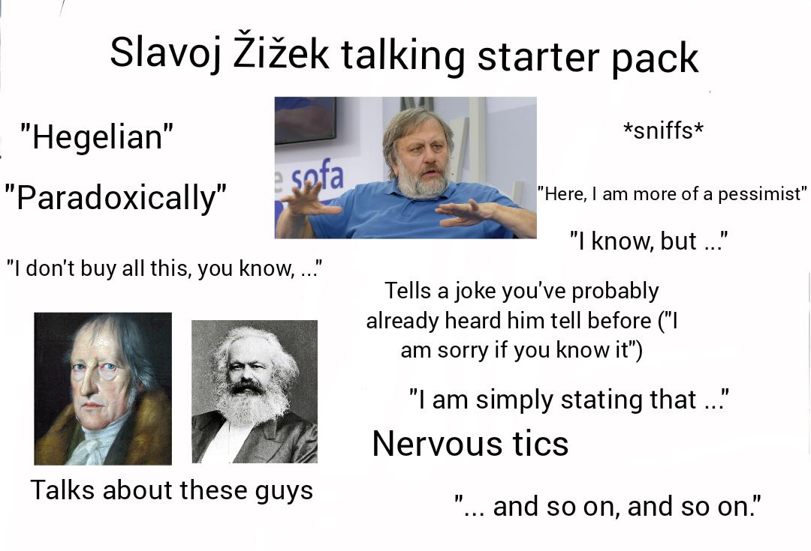
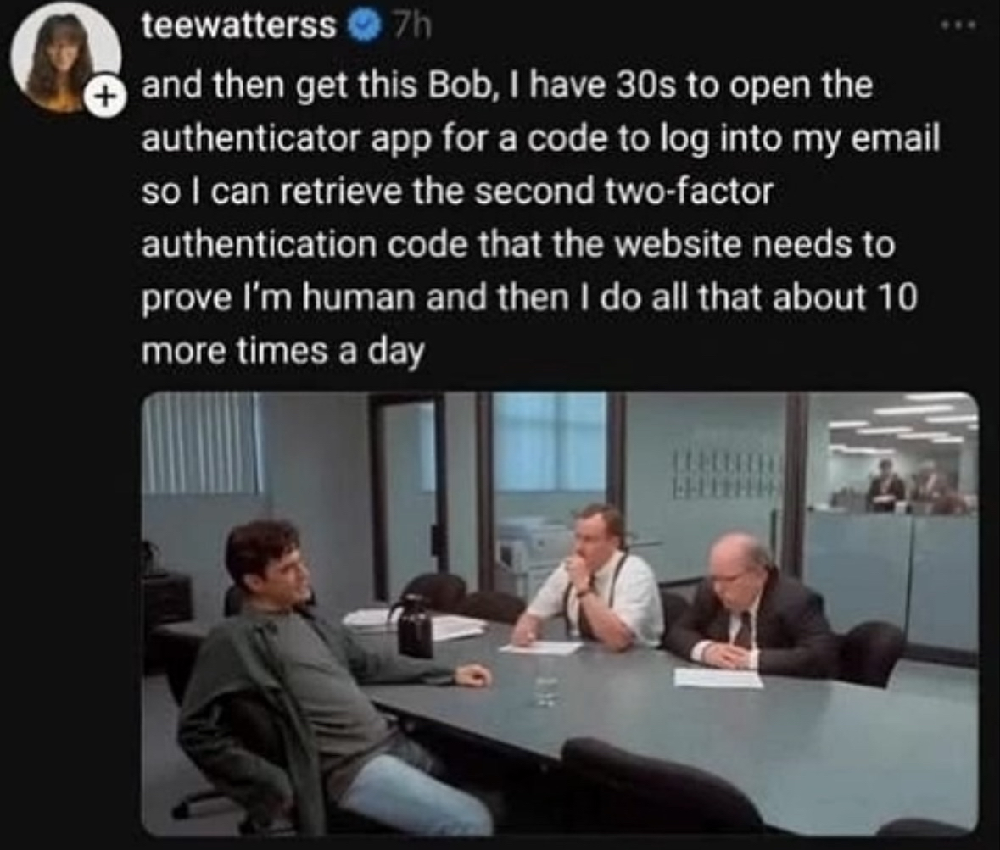
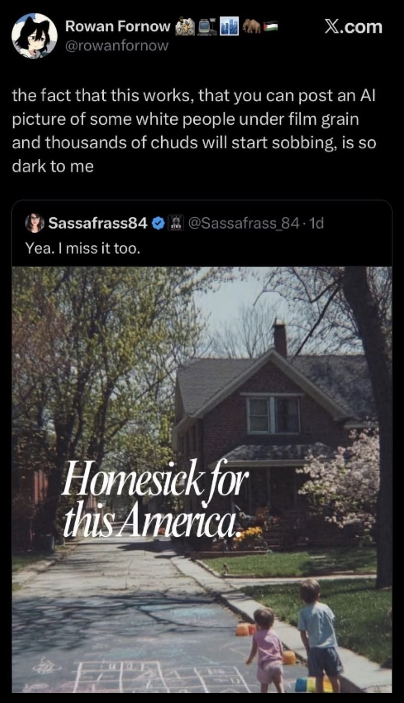
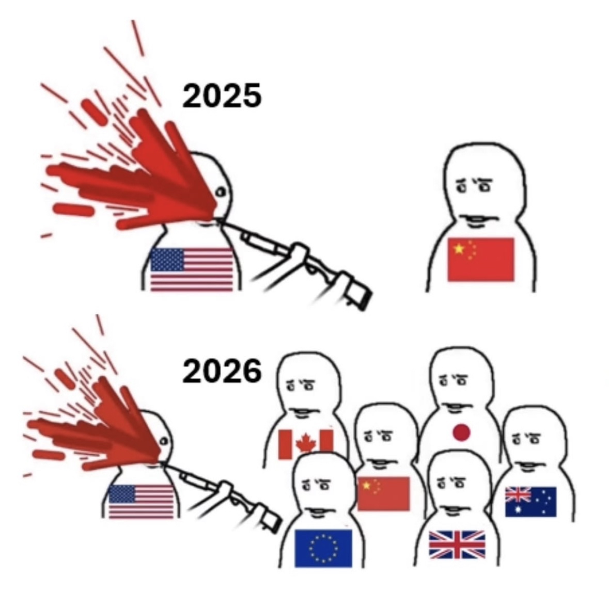

American Cope
We Are Fighting the Stupidest War Ever
1 No, new wars!
To close out the month of February, President Donald Trump has, in his unyielding wisdom, blessed the world to a real treat. We are at war with Iran! Kind of. The United States, alongside its thoroughly loyal and perpetually steadfast ally, Israel, has successfully bombed a girls’ school1 and derailed nuclear talks with Iran. This stroke of genius has been delivered by the “no new wars” administration (Greenhut 2026), because circumstances surely proved such a new war necessary2. As such, the American military has wrought fire and epic fury on the lands of the Iranian regime, and it is only a matter of time before American dominance is again cemented. Any day now.
Let us make no mistake, the “war” in Iran will prove to be a failure; one of many death knells of American diplomatic standing. It will be a failure not because America will find the whole of its armies encircled and battered, but because such armies will not even be sent3. The American defense apparatus knows that a conventional war in Iran would suck (“"U.s. Joint Forces Command Millennium Challenge 2002: Experiment Report",” n.d.), and does not want to seriously pursue one. The American people, even if just implicitly, know that we lost in Iraq and Afghanistan, and that Iran is bigger and stronger and tougher than both. And American energy companies want to make money, and would really like passage through the Strait of Hormuz. Overall, everyone seems to understand that a war with Iran is really stupid, and yet that still did not preclude American bombs from dropping; did not preclude us from killing their leaders and their children. In the midst of negotiations where Iran was said to have made considerable concessions, the United States and Israel launched strikes against them, pissing off not only diplomatic rivals, but just about every other country in the world. There are, naturally, many different ways to ask why the United States would do this, but something equally important, is to ask how the United States will grapple with its impending embarrassment. In both cases, I suggest that the answer is cope. More specifically, a very brutish, aimlessly violent cope; a sore-winner cope.
It is difficult to write in depth about a conflict that I expect to be stupid and short. Rather, this piece is dedicated to interpreting American behavior through the lens of “cope,” making specific reference to Žižek’s notion of the ideological fantasy as its core. We will begin by introducing our concepts, and then reflect on some pertinent examples in media and current events. Our ultimate aim is to illustrate the case of American cope.
2 A New Cope
Here is a fun exercise to know if a military operation is going well: count the number of times that the (stated) intended outcomes and investment have changed. At the onset of this conflict, the White House declared that it was seeking “UNCONDITIONAL SURRENDER!” from Tehran and expected the conflict to resolve quickly; within days. The various talking heads and lackeys of the MAGA4 movement, who for so long praised Trump’s strength as peace-maker, made sure to urgently parrot this more hawkish stance5. Fast forward and the new line is that the President does not really need the Iranians to actually surrender, and can himself determine when the increasingly vague objectives of this operation have been met. In other words, Trump decides when Iran has “unconditionally surrendered.” By this, Trump is made arbiter, wielding the power to determine when the war ends, no matter the agency of Iran. This is the kind of fantasy that one concocts when in denial. It is the exact kind of thing that would be expected of Trump in this exact circumstance, but that does not make it any less stupid. Worse, it does not make it unique to him.
{kind=link}
{kind=link}
Imagine if you went under the knife for a knee replacement6, and after all the prior consultation and initial cost estimates, you woke up to find yourself with no new knee, a final cost that was quadruple what was promised, and a hospital administration that demanded you accept their narrative over any other; demanded you accept that your procedure never strictly promised a new knee. Better still, imagine that a sizable chunk of others who had undergone the same “procedure” did (ostensibly) accept that narrative, and did everything they could short of giving you a lobotomy such that you did too. This is what we call cope. This is the cope of a country that cannot reconcile the dissonance between its own reality and the true realities before it. The hospital is lying, the surgeon is an idiot too drugged to have operated on you, and the patients who still defend otherwise can be deemed only corrupt, drugged, or both.
Understanding that this entire endeavor is going to be rife with such copes, it is worth constructing a narrative around its mechanisms. To wit, it is worth discerning how cope is expressed. I would divide these expressions into two distinct categories: the base, and all layers atop it.
2.1 The Base Fantasy
[…] every French citizen has to have forgotten the massacre of Saint Bartholomew.
— RENAN and GIGLIOLI (2018)
Cope is a hell of a drug. Its principal role is to soothe your mind. In What is a Nation? Ernest Renan7 posits that something critical to national identity is “the act of forgetting” (RENAN and GIGLIOLI 2018). To be united as one, the many histories that divided the mass are forgotten; the past is forgotten, or reshaped to fit the present national identity. This demands a kind of cope from each participant. The victims of past violence are called to suppress their pains, and the perpetrators deny not only wrongdoing but ignore the event wholesale. The overall expectation is that every party understands that nothing occurred but that their “nation” victoriously endured. It is easier to live in nations when you forget their crimes against you. We can call this a kind of base layer of national identity.
Renan relies on this act of forgetting as a literal kind of thing. Of course, given that he knew of the massacre he cites (the massacre of Saint Bartholomew), it is doubtful that Renan means to say that every French citizen has literally forgotten it. Rather, in the formation of the French identity, events like these massacres are intentionally forgotten and subsequently obscured, such that future generations do not dwell on them as sources of division. The act of forgetting to Renan is therefore a literal process of erasure, by which an illusion of a nation is constructed in the absence of knowledge. The modern nation is thus a fantasy8, buoyed by successive generations of this cope. That such mental gymnastics are possible, and common, and integral to national development, should make certain to us that they are not limited to the concept of nationhood. Moreover, it is worth questioning how nations survive where knowledge is available. In a world where we can know of so many massacres against us, how do we retain our identities?
[…] to the individuals themselves, this function of money—to be the embodiment of wealth—appears as an immediate natural property of a thing called ‘money’
— Žižek (1989)
In The Sublime Object of Ideology, Slavoj Žižek9 cites Marx’s notion of the illusion of “commodity fetishism”, the way that social relations among peoples appear as relations among things, and connects this to what he calls the ideological fantasy. On the former, money is no more than a set of social relations, but in your perception of using it, its value may as well be a natural property. Žižek writes that the classic notion would assume this perception a function of knowledge, and that the illusion resides in the space between individuals and that knowledge; meaning that, one does and believes, because they do not know. Rather, Žižek asserts that the place of the illusion is not in knowledge, but in reality itself. It is not that people do not know, and thus do, but that they recognize the illusion and do anyways. This process creates dissonance between the reality we experience and the true kernel of reality (the real) that belies it. To maintain our reality thus requires not only the illusion, but also overlooking that it is an illusion. This is the ideological fantasy; the bridge between the real and our reality.
He knows very well that Roman law and German law are just two kinds of law, but in his practice, he acts as if the law itself, this abstract entity, realizes itself in Roman law and German law.
— Žižek (1989)
The ideological fantasy is not necessarily things as you believe they should be, but rather how you permit yourself to perceive them. You may well be an anarchist at heart, but you still recognize “stupid” laws and follow them because you “have to.” To go further, you do not even need to like your reality; it only needs to be coherent to you. This is what makes it cope. It is a process of simplification for a real that is even more complex than the reality we perceive. You know that there are no particularly special natural properties to money, but knowing that does not help you in your reality.
Thinking back to nationhood through the lens of ideological fantasy, what would learning of the massacre of Saint Bartholomew do to the typical French citizen? Would such revelatory knowledge call them to strip themselves of citizenship and renounce their French-ness? Unlikely. The act of forgetting to us is therefore not literal; you can know of these events, and learn of them, and still have “forgotten” them. Your participation is unconscious, and you are not shielded from it by your knowledge or cynicism10. Your willingness to take part is the fantasy. As Žižek notes, “[…] even if we do not take things seriously, even if we keep an ironical distance, we are still doing them” (Žižek 1989). So long as the illusion remains coherent to you, you accept and engage in it.
Ideological fantasy is cope; it is the base cope. This base is the way you principally perceive your reality and to reject it is to reject living in your reality. The fantasy itself, however, depends on your willingness to overlook it, something that is conditioned, effectively, by how well it makes your world seem coherent. Where gaps appear in the illusion itself, additional layers of cope are necessary.
2.2 Layered Cope
It is the awareness that we live in an insulated artificial universe which generates the notion that some ominous agent is threatening us all the time with total destruction.
— Žižek et al. (2009)
Part of the ideological fantasy being in reality, and not in the place of knowledge, is that we know about it. Most everyone understands that their world is “fake” on some scale, and that knowledge is, of course, deeply discomforting in itself. That is why we overlook it. But sometimes, it may become especially difficult to do so. In such cases, it is still easier to retreat to the worlds of additional fantasies to “explain” the failures of your own, than to reject fantasy entirely. Where we struggle further, and still cannot explain gaps in our own illusions, we enter periods of deep disillusion, wherein we must suspend our own disbelief further and further. Once you can no longer suppress the discomforts of the real, it becomes easier to believe in a reality of conspiracies than to reject reality itself. This kind of thing drives people insane.
In Welcome to the Desert of the Real!, Slavoj Žižek, opens saying that the “ultimate American paranoiac fantasy” is to be effectively Truman Burbank in The Truman Show (Žižek et al. 2009); slowly unraveling that the society around him is a farce. This idea reflects a narrative of disillusion, where Truman comes to understand that his reality is false. This particular story appeals to the American sentiment because our society is one that has thoroughly commodified itself, but its basic conspiratorial nature is one that appeals globally. In itself, relating to such narratives is a cope.
We know that we live in fantasy, and know that we overlook it to continue living. When we struggle with fantasy, it is easiest to fantasize about unraveling it to reveal another. The fantasy exists to simplify the real, and when it fails we look for something simpler. What simpler is there but the notion that one person or group is the source of all our struggles? These paranoiac fantasies, and all such conspiratorial views, are cope.
Whatever their appearance, these additional bits of cope do not necessarily exist in conflict with the base fantasy, but rather are layered around it, supplanting less coherent aspects of the base above and below. You may believe that there is a shadowy Illuminati-like organization that controls all currencies, but you still need to spend money to live, and recognize its “natural” value in your reality. This line of thought serves the same function as our cynicism (it is a comforting fantasy to think that your public loathing means anything to your reality) and any other such cope. It exists to let you push away thoughts of the real, plugging gaps that emerge in it or in other layers of fantasy.
It is feasible that one could experience something akin to an “awakening” and transition from one base to another, but it is intuitively easier to just add more layers. Moreover, given that we fundamentally know that these bases are all illusions, an individual may not see any point in such a transition. Either way, we do not leave. It is all cope, even where we struggle, disillusion itself can be an aspect of cope. This, in particular, is worth considering in the broader American case.
2.3 Disillusion as Cope
Sergeant Prendergast: Now let’s go meet some nice policemen. They’re good guys. Come on, let’s go.
Bill Foster: I’m the bad guy?
Prendergast: Yeah.
Bill Foster: How did that happen? I did everything they told me to.
The success of the United States in the Cold War, and its place (briefly) as the sole “hyperpower” of the globe, enabled Americans to build a world of total illusory comfort. But this world felt hollow. Where victory had granted its staunchest believers no more secure a reality, and the social gaps once excused by fear of Soviet aggression were on full display, a distinct sense of disillusion appeared. The ails of American society were not miraculously lifted by its victory, and as the world crept towards the digital revolution, the bureaucratic state was only becoming more impersonal. A cope for such disillusion was a fantasy of rebellion against an indifferent reality. The immediate post-Soviet world is what gives rise to stories like The Truman Show, but also Office Space11 and Falling Down. Where the former reflects this paranoaic fantasy of unraveling reality (Žižek et al. 2009), the latter two present a fantasy where its characters have already become disillusioned with their realities, and are exacting their revenge. That in each case they find success in their efforts speaks to a growing power fantasy for Americans without meaning.
William Foster in Falling Down is a man at the end of his rope. He represents a stereotypical kind of white-collar working man, now unemployed and devoid of meaning. After brushing against increasing exhaustion, he breaks and goes on a rampage. In his exploits, he is neither particularly cruel nor especially righteous, but can be best described as someone who wants to feel treated with respect and given purpose; someone who wants to be seen and observed for all his presumed toils in life. He obeys certain norms and rages over the various small nuisances of his reality. Overall, Foster is a man who has become thoroughly disillusioned in his fantasy and is enraged by its incongruities. It is no wonder that such a story of lost purpose would so soon follow close of the Cold War.
Foster has no victory in life. He embodies the anger of a person that has observed continuous personal loss despite the reported success of his nation12. He has observed all the norms of his reality, yet he is hardly rewarded for his efforts. He is unemployed, struggling, and treated with suspicion when seeking basic courtesy. In his break, Foster responds by being sufficiently violent to make the reality around him operate as it should in his. That this response largely works (until his demise), fulfills both a power and revenge fantasy for the viewer; but it remains a fantasy. Note the violence, and keep it in mind; it appears key to American cope. To imagine yourself as a Foster-like character, who could go on such a rampage and believes that doing so would imbue them with some kind of recognition, is a cope. You are not going to be Foster. You are going to continue operating in the illusion, and when you close your eyes and imagine yourself as Foster (or a character smashing a printer in Office Space), it serves only to help continue distracting you from the illusion.
2.4 It’s All So Tiresome.
By this point, it is worth observing that this is all exhausting. Layers of cope, cope on cope; it is exhausting. What is worse is that you experience this. Part of the exhaustion is that these additional layers are being added with increasing frequency. Where the growing impersonal nature of the state may have induced a kind of rage decades ago, it increasingly just exhausts you. States and societies have reached levels of connection and abstraction that were hardly imaginable in the pre-modern world, and that development forces us to constantly approach the illusion in ways that we do not want to. Like described in Section 2.1, we exist in a world where we can indeed know of just about every aspect of our illusion. But with so much knowledge on the apparent “laws” of our fantasies, and the overt recognition of just how little they are followed, we must construct more and more layers to maintain coherence. We find ourselves forced to consciously ignore illusions, rather than being permitted to do so unconsciously; and it is exhausting to be constantly reminded that nothing means anything13. Nick Fuentes is a person with detestable and stupid views (he is a fascist, for one), but I think his exhaustion below is representative of the broader “vibe”:
In the above clip14, a viewer is asking about Trump being the “Messiah ben Joseph,” and Fuentes is, in a rare show of reason, exhausted by such a question. Who the hell would seriously believe that Trump is the Jewish messiah, descendant of Joseph?15 To say, “it wasn’t like this before,” as Fuentes does, is of course a cope in itself; imagining that things used to work in ways that they do not now. But it is arguably true that the illusion was easier to overlook in the days before “everything’s a conspiracy.” The “5D chess” line references another cope, which is that political figures (let us say, Trump), who behave in ways contrary to their rhetoric, are merely making complex political moves, and not betraying their base. Of course, they are betraying their base, but when you are of that base you would rather believe otherwise16. Overall, we get a real sense of disillusion from even one of the biggest cheerleaders of the online right; a deeply relatable expression from a deeply detestable character.
Having come through to the end of our diagnosis, we can clearly define the nature of cope. There is a base layer, through which you perceive your reality. You know that this base layer is not entirely true, but that it serves to simplify a reality that is otherwise overwhelming to keep pace with. So long as this base fantasy is coherent, you will overlook its nature. Where it is incoherent, you will add additional layers to plug the gaps. The process of adding these layers can itself create dissonance, and exhaustion, particularly as more are added, but you are unlikely to leave reality itself.
3 Russia’s Cope-doggle
To establish a kind of “counterfactual” cope, let us look to our mirror in Russia. The Russians are not so fortunate as the Americans; not so fortunate to have been raised as victors of the 20th-century. Where we won, they lost. Russians in the fall of the Soviet Union had the unique honor of watching their state be reduced to its smallest size in centuries17. The years of Yeltsin’s “shock therapy” resulted in former Soviet bureaucrats becoming wealthy oligarchs, mafia organizations assuming immense local power, and an overall prestige hit worthy of a mighty state thrown to the gutter. This experience was understandably deeply traumatic to the Russian psyche, and has thus resulted in a highly revanchist culture that, one way or another, wants to be of first-rate importance again.
3.1 Perverse Underdogs
The truth of the Russian state is that it is an oligarchic republic with its respective interests balanced carefully by a corrupt but firm federal administration. The illusion of Russia, is that President Vladimir Putin is a spy-genius-turned-dictator, feared by the “West,” who will return to her her lost prestige. This cope is draped often in Soviet and Imperial aesthetics, but lacks the policy of either. Just as the United States, the nature of the Russian state is to seek power18, but for Russians, it is more specifically to reclaim it. This is expressed in a perverse kind of underdog mentality, where a state that still possesses a nuclear arsenal and sizable military assets considers itself beset by foes. According to this logic, Russia is in her present place not due to failures of the past, but because she has been intentionally stunted by the West, and stripped of her rightful lands. This is obvious cope. To know that you lost the Cold War without it ever going hot and continue asserting your “claims” to lands that do not want you, is cope. Russia simultaneously manages to exalt the apparent strength of its forces, while remaining a perpetual underdog in foreign affairs. In Ukraine, Russia expected a quick victory against the very same forces that supposedly hobbled them. The fact that this does not make sense does not really matter, because the narrative is largely made coherent for Russians by additional layers of cope (e.g., “the West won’t intervene seriously over this”). What is pivotal to understand in the value of this narrative is that underdogs are “fine” with losing, so long as they think they will eventually win.
When the Russian Federation escalated its own military enterprise in Ukraine, state media reported that the war would be quick and decisive. Somehow this is still part of an underdog narrative for Russia, despite Ukraine being one-quarter the population. Although it was not Putin himself, but rather his Belorussian counterpart Lukashenko who said it (2022), Russian talking heads parroted the notion of the war being over in as little as 3 days.
3.2 Someone Eventually Won the Great War
The war in Ukraine has now gone on for longer than the siege of Leningrad, and the frontline has been roughly as static throughout. Anyone who saw the The First Chechen War should have known better than to expect quick success from Russia. The number in dead and wounded and the investment otherwise has far exceeded the vague promises of a “quick war.” Despite this sure embarrassment, the truth is that Russia is “winning,” if only in the sense that Ukraine is surely losing. This victory is exceptionally slow, bloody, and demonstrably contingent on the decline of American and European support (of Ukraine), but it is coming. We can see below that whereas the gains made from February 2023 to 2024 were hardly visible, visible progress has been made since.
{kind=link}
{kind=link}
{kind=link}
That their military is not as potent as they believe does not mean that Russia is weak. That the Russians are underdogs means that they are willing to sustain heavy losses for even the idea of a victory. Akin to the Soviet mentality of the Great Patriotic War, no cost is too high. As such, against the wishes of her neighbors and former peers, the Russians have endeavored to reclaim their lost prestige, and are willing to do so at great cost. In Ukraine, Russia has made notable, if small, gains in the past year, and that is largely explained by their resolve to continue.
That Russia initiated this war was stupid, and the result of cope. To think that the Ukrainian state would not raise effective resistance was stupid. To think that the Russian armed forces were of a class that could pull off paradrops at Hostomel Airport was stupid. To think that the Ukrainians, who have spent the better part of a decade improving their forces, could not respond to Russian air power or strikes, was stupid. To think that President Joseph Robinette Biden (of “blow up all the bridges on the Drina” fame) would not sufficiently aid Ukraine, was stupid. In essence, to believe that this would turn into anything but a difficult slog was stupid. But, in the end it is likely that Russia will still come away with at least the lands it “annexed” already, because the Russians simply will not leave otherwise. This war is a boondoggle, but Russia will come out of it with something tangible. The same cannot be said for the Americans!
4 A War with Iran is Really Stupid (That’s why it’s not happening)
The United States of America cannot win this war with the Islamic Republic of Iran. This does not mean that it is impossible to concoct a scenario where the United States would win19, but rather that there is no way that America would ever fight the kind of war where it could win. Iran is not a small country, nor is it a weak one that could be treated as some sideshow in a real ground war. Iran has a larger population than Nazi Germany, more modern production methods, and extremely favorable terrain. Do you think that the United States is prepared to augment its economy, even a little, as it did in the most deadly conflict in human history? Knowing this, we must therefore consider the fantasies of America to explain what reason cannot.
4.1 Post-9/11
_(1).jpg){kind=link}
Continuing from our place in Section 2.3, Americans coming out of the Cold War are best understood as almost-aimless sore winners, left to confront their own societies and being deeply unhappy with them. In time, as American foreign policy was left free without a Soviet check, it would be that we “became” the world’s policeman; our various troubles on the homefront being again relegated to the righteous cost paid to our effort. In this role, the American found meaning again. While the United States would of course aim to expand its monopoly on international force, becoming the powerful and nosy state we see now, its justifications gave the American psyche purpose.
The United States spent the remainder of the 1990s onward engaged as a “policeman” in various theaters across the globe. Such behavior (including similar endeavors prior), understandably, upset certain peoples in those theaters, culminating in the September 11th terror attacks. I would hesitate to be so crass, but Žižek et al. (2009) describes this as a kind of wish-fulfillment on the part of Americans; the police getting their crime. The cruelty unleashed in the aftermath of the attack is reflective of a deeply violent society that had found its excuse. The same ideations of sore-winner rampage seen in Section 2.3 were given their outlet. In addition to invading the Islamic Emirate of Afghanistan in search of the perpetrators (of 9/11), the United States also invaded Iraq. Iraq had nothing to do with the attack, and one million Iraqi civilians died in connection to the American intervention (“More Than 1,000,000 Iraqis Murdered” 2007). The scale of death among an innocent populace should be indicative of a very rotten and violent core permitted by the “world police” fantasy. The United States justified this by grouping several nations of varying inter-state enmity together under the “Axis of Evil,” asserting that they together sponsored global terror. Iraq and Iran were both the core members of this grouping, but the United States invaded only the former. In each case, the American public was poised to expect decisive victory where we did engage. And yet.
Iraq and Afghanistan became costly boondoggles and the United States eventually lost both; losing the latter after an especially prolonged stay. Both cases illustrated that our position as the force with all the shiny toys was fading (Arquilla 2010), but more importantly, that the American resolve for prolonged conflicts was weak. These were indeed expensive and long wars, but their effects on the daily experience of most Americans were relatively minimal. Unlike the Russians who fight the Ukrainians on their borders, these wars were waged across oceans from us, and with significantly lower troop deployments. But, the American variety of cope did not have the stomach for such things. The Russian mentality is violent as well, but “at least” they have some follow-through. Sore winners do not carry the same tolerance for struggle as underdogs.
The immediate reckoning of our war experience was that the administration following that of President George W. Bush Jr., that of Barack Obama, opted to scale back certain commitments and accept a slightly more limited role globally (Krepinevich 2009). Americans coped by focusing on the loss against insurgency, rather than the failure of invasion20; ignoring that the result is the same loss. This tepid acceptance of our weakness, without acknowledging it socially21, permitted us to maintain the tough and violent American cope. Americans will bomb you with munitions that cost half a million a shot, not because they are afraid of deeper commitment, but because you are just so insignificant to them. Your body and your family’s bodies will be made dust, because you are so insignificant. These conflicts began what would become a trend for American “war” in the 21st-century: bomb people you do not like, maybe send some relatively small troop deployments, then go home to the safety of North America to declare some kind of victory.
Let us collect our observations. The American cope coming out of its Cold War victory was a quietly violent one, deluding itself as a righteous protector (as sometimes acting to that end!); this violence was quickly accelerated and lost its righteous trappings following the 9/11 terror attack; and our losses in the wars launched thereafter did not reduce our violence, but gave us a fear of further failure. The last thing the United States wants is another outright loss to have to cope with; it is easy to call yourself the strongest when you pick fights with toddlers.
4.2 Planning
Having considered the character of the American cope, the United States knows that a war with Iran is effectively unwinnable, particularly given the style of “war” that has been adopted (McCabe 2016; “"U.s. Joint Forces Command Millennium Challenge 2002: Experiment Report",” n.d.). Iran will not fold under some bombs; it is not some rag-tag terror group. That is precisely why, despite all our national rhetoric against the,, we had not launched such a war with Iran. In 2002, the United States launched the Millennium Challenge 2002, a war game exercise against a totally unknown country (Iran) in the Persian Gulf. In this exercise, the United States lost, until it rewrote the rules to win (“"U.s. Joint Forces Command Millennium Challenge 2002: Experiment Report",” n.d.). Despite this enormous waste of $250 million, it is clear that somewhere in the last few decades, even with all the cope, the American defense apparatus understood that a war with Iran would be difficult, if not entirely unwinnable. Likewise, each presidential administration was assuredly advised of exactly that.
Iran has 90 million people, a sizable military, domestic manufacturing capacity, deeply favorable terrain, and a key bargaining chip in the Strait of Hormuz. It is a total waste of time to fight a real war there and everyone knows that. The cope of American pure might, and some perceived weakness of Iran, did not outweigh that reality until now. The United States simply is not as strong as we may perceive it; if it were, this war would have happened earlier and been won.
4.3 Trump and This “War”
To understand is difficult; to act is easy.
This is not a “war” any more than the (more brief) exchange of fire last summer was. There simply will not be Americans landing en masse on the shores of Iran, because that is not practical. There are constant tales being spun that exactly this will happen any day now, but it will not. Perhaps Kharg island or some other more targeted engagement will take place, but even that is seriously dubious. I am sure Trump dreams of launching a raid on Tehran like he did on Caracas, but Iran is not to be played like Venezuela. Rather, Trump appears intent on bombing Iran into doing his nebulous bidding, which will not happen, for reasons we have described. Iran is a real country. As this does not happen, Trump will eventually stop and declare victory anyways. I envision that backroom talks will boil down to bombing and threatening Iran until the strait is reopened and declaring victory when that occurs. Given that the Iranian navy will be at least partly sunk while the United States retains its fleet, the cope-addled conclusion will be that the United States must have won. The White House has already begun preparing for this by releasing a “timeline” detailing their much more limited intentions, despite those obviously conflicting with Trump’s own statements these past weeks.
When you see Trump oscillating between asking for help from scorned allies and defiantly declaring that we need no help, and when you see his core sycophantry cheer for some imagined power, just remember that it is cope. Trump did not create this American mentality, but he has certainly embodied an amplified version of it.
5 What More is There
Broadly, this war reflects a violent nation that desperately wishes to believe itself a still uniquely powerful and feared one when instead it is increasingly derided for its poor behavior on the world stage. Of course, this nation, the United States, is still unbelievably powerful. That is why America remains safe enough geopolitically to get to act so poorly. America holds both the capacity to do stupid things, and experiences a lack of consequence such that its only limit is what it thinks it could cope its way around. We are sore winners, thirty years on from our apex. Trump knows he needs help but would sooner die than admit it, and his base knows this is stupid, but wishes it was not. We are hiding our casualty counts. What is real is that this war further erodes our standing with our partners and only serves to make us despised. The American decline will only continue22 because our mentality precludes us from acting sanely.
American cope is, at its base level, a deeply violent mentality arising from being sore-winners of the Cold War with incongruent notions of the violence wrought on them and the violence they have unleashed on the world. At the same time, this perception is scared by the implicit knowledge of our embarrassments in Iraq and Afghanistan, and therefore often manifests itself in expensive bombs and bluster rather than expensive deployments. Given the American position geopolitically, it is unlikely that she will need to drop this act particularly soon. We will just keep pissing other people off and retreating to North America. I give the war in Ukraine another couple of months to a year before some kind of settlement; either “ending” it or just offering a robust ceasefire. I give the war with Iran until the end of March until Trump really starts to back out; there probably will be some fallout for some time after. Alternatively, this mess may drag on in its current state for longer, should Iran refuse to open the strait23. Ultimately, Russia will get something out of their war, and the United States will not. Maybe that is just cope too.
References
Footnotes
Other targets, of less pivotal strategic value, are soon to follow for the forces of Pete Kegseth.↩︎
The President works in mysterious ways, and it is not our place to question the machinations of His genius.↩︎
In an extreme case, I could imagine maybe Kharg island, but that would also be really stupid. There are some stories that the admin is considering occupying coastal areas around the Strait of Hormuz but like, come on be serious that would be a nightmare.↩︎
“Make America Great Again,” if you really live under a rock.↩︎
It is worth noting that this is not a universal case, some in the “America First” camp have genuinely shown opposition.↩︎
See below: ↩︎
A European scholar from the 19th-century; he extremely racist views. The Life of Jesus is wildly anti-semitic. His lecture What is a Nation? is useful here and I reference it for its utility.↩︎
Illusion.↩︎
See also:

↩︎Like when someone who barely got through high school sends you a video about how school is little more than preparation to work and it’s like “yeah, man, I know.”↩︎
See below:

↩︎Chuds would relate!

↩︎Let’s not even get started on AI and LLMs. Please God.↩︎
I am not going to go through the work of getting a citation for an Instagram reel of a quote tweet of a tweet of a clip of a livestream. That would require me Googling “Fuentes clip about becoming liberal” and at that point you are subjecting my search history to pains I will not permit. I have never watched this hiss streams and I am not going to start.↩︎
There are levels of cope that the average mind cannot fathom.↩︎
At the same time, if someone comes to you, and puts on this mask talking about “oh it’s 5D chess man, you just don’t get it!” you would be forgiven for finding them exhausting.↩︎
Still enormous though. Also, while the Soviet Union was not the same as “Russia” the core of the state remained firmly in the Russian Soviet Federative Socialist Republic (RSFSR), and the average vatnik does not mind the conflation.↩︎
This is what states do. I mean, it is not a “natural property” of states, that would be an illusion, but people aligned with states aim to strengthen them as an extension of themselves.↩︎
And we’ll see that they did just that at the cost of $250 million (“"U.s. Joint Forces Command Millennium Challenge 2002: Experiment Report",” n.d.).↩︎
“We didn’t lose the war, bro, we just stopped being willing to keep our troops there forever to fight insurgents.” Interesting, so, the other side was able to fight you until you gave up?↩︎
There are many “anti-war” types, who are really just afraid of loss, rather than holding genuine humanitarian convictions. Neoconservatism would still control the right if we didn’t lose those two wars.↩︎
See also:

↩︎It looks like Trump’s ultimatums on the state of the strait mean nothing, but other countries are surely pressuring Iran too.↩︎